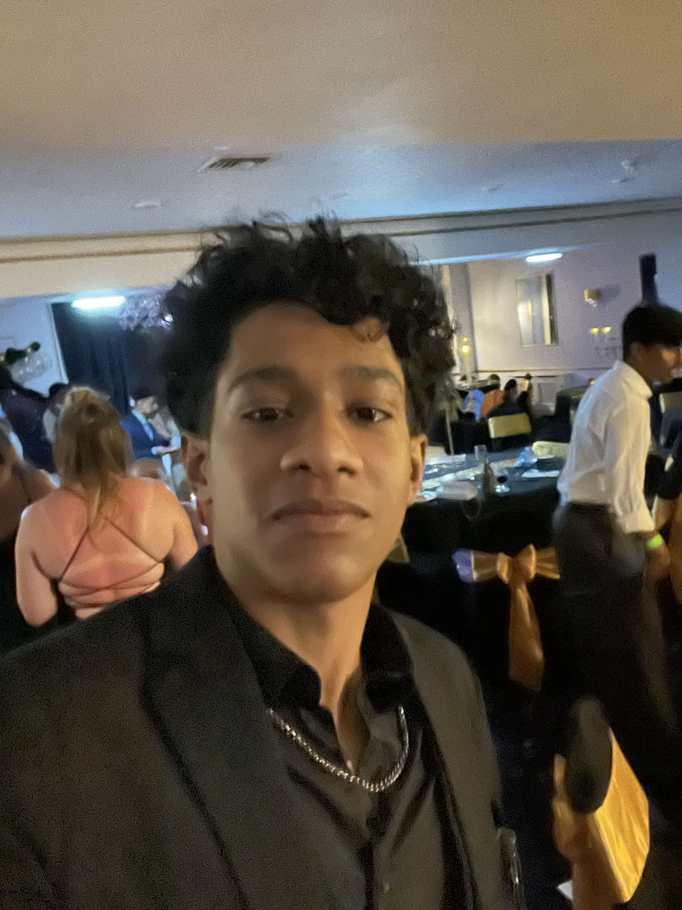

Abdul-Rahman Amour
Role: Student 5
Consider me a passionate problem solver, I enjoy working on a schedule and will swiftly adapt to new situations, I have had a great education, which has helped me learn confidence, communication, punctuality, and dependability. I am multilingual, fluently speaking English and Swahili
Skills
- Python
- JavaScript
- HTML
- CSS
Contributions:
- Constructed the Timeline Page
- Co-Developed the home page
- Created 8 different events with expandable cards and information
- Ensured WCAG accessibility compliance for color contrast.
- Integrated the global CSS variable system for brand consistency.